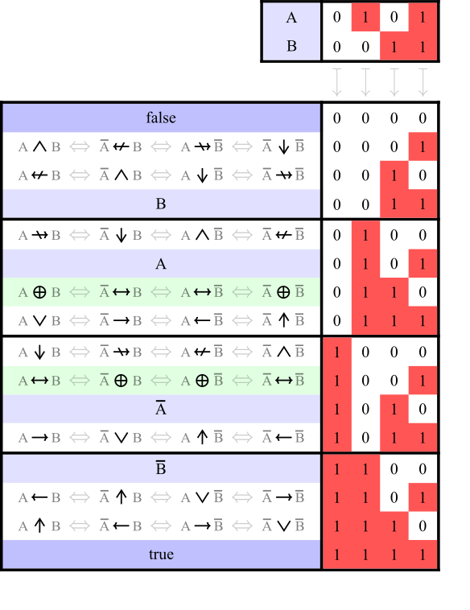
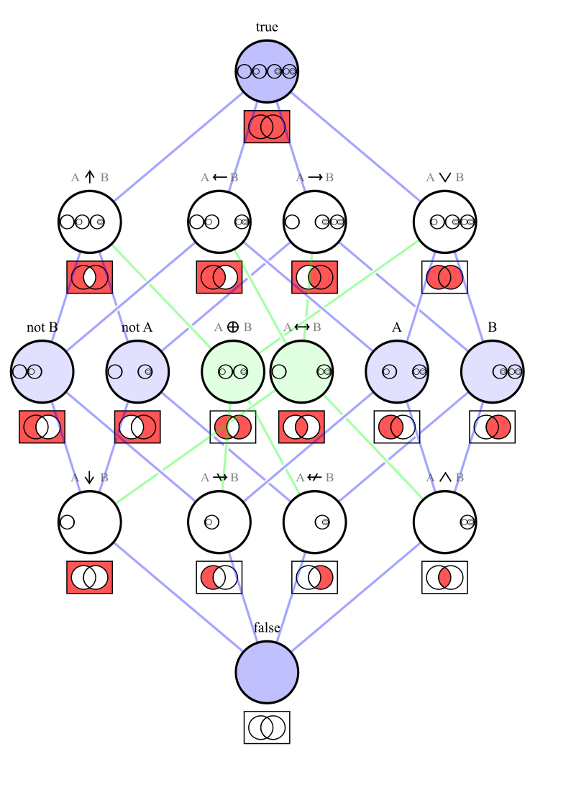

OI Wiki · prijevod · MatematikaOI Wiki · translation · Mathematics
Booleova algebraBoolean algebra
Sadržaj
U matematičkoj logici Booleova algebra (Boolean algebra) grana je algebre. U elementarnoj algebri vrijednosti varijabli su brojevi, a glavne operacije koje se proučavaju jesu zbrajanje, množenje, potenciranje i njihove inverzne operacije. U Booleovoj algebri varijable poprimaju samo dvije vrijednosti, istina i laž (obično se označavaju \(1\) i \(0\)), a glavne operacije koje se proučavaju jesu konjunkcija (i, \(\land\)), disjunkcija (ili, \(\lor\)) i negacija (ne, \(\lnot\)). Kao što je elementarna algebra formalizam za opisivanje operacija s brojevima, tako je Booleova algebra formalizam za opisivanje logičkih operacija.
Booleove funkcije
Definicija
Booleova funkcija (Boolean function) funkcija je oblika \(f:\mathbf{B}^k\to \mathbf{B}\), gdje je \(\mathbf{B}=\{0,1\}\) Booleova domena (Boolean domain), a nenegativni cijeli broj \(k\) arnost (arity) te Booleove funkcije. Booleova funkcija s \(k=1\) jest unarna funkcija, i tako dalje. Za \(k=0\) smatramo da se funkcija degenerira u konstantu iz \(\mathbf{B}\).
Uglavnom proučavamo samo unarne i binarne Booleove funkcije. Ako nije drukčije rečeno, Booleove funkcije u nastavku ograničene su na unarni i binarni slučaj.
Osim uobičajenim zapisom funkcije, Booleove funkcije možemo prikazati i tablicom istinitosti (truth table), logičkim vratima (logic gate) i Vennovim dijagramom.
Tablica istinitosti
Za Booleovu funkciju nabrojimo sve slučajeve njezinih ulaza te ulaze i pripadne izlaze popišemo u tablicu; ta se tablica naziva tablica istinitosti.
\(n\)-arna Booleova funkcija može se prikazati i propozicijskom formulom (propositional formula) s \(n\) varijabli; propozicijske formule \(p\) i \(q\) logički su ekvivalentne (logically equivalent) ako i samo ako opisuju istu Booleovu funkciju, što zapisujemo \(p\iff q\).
Slijede neke česte Booleove funkcije; te Booleove funkcije zajednički nazivamo i logičkim veznicima (logical connective) ili logičkim operatorima (logical operator):
| Naziv (matematička logika) | Drugi nazivi | Oznaka |
|---|---|---|
| tautologija (truth, tautology) | \(\top\) | |
| kontradikcija (falsity, contradiction) | \(\bot\) | |
| propozicija | identitet | \(A\) |
| negacija (negation) | ne (NOT) | \(\lnot A\) |
| konjunkcija (conjunction) | i (AND) | \(A \land B\) |
| disjunkcija (disjunction) | ili (OR) | \(A \lor B\) |
| nekonjunkcija (non-conjunction) | ni (NAND), Shefferova crta | \(A \bar{\land} B\), \(A\uparrow B\) |
| nedisjunkcija (non-disjunction) | nili (NOR) | \(A \bar{\lor} B\), \(A\downarrow B\) |
| isključivo ili (exclusive OR, XOR) | \(A \oplus B\) | |
| isključivo nili (exclusive NOR) | \(A \odot B\) | |
| materijalna implikacija (material implication)2 | \(A \to B\) | |
| materijalna neimplikacija (material nonimplication)2 | \(A \nrightarrow B\) | |
| obratna implikacija (converse implication)2 | \(A \gets B\) | |
| obratna neimplikacija (converse nonimplication)2 | \(A \nleftarrow B\) | |
| bikondicional (biconditional), ekvivalencija (equivalence)23 | \(A \leftrightarrow B\) | |
| neekvivalencija (non-equivalence)24 | \(A \nleftrightarrow B\) |
Pripadne tablice istinitosti (izvor: Wikipedia):


Pripadni Vennovi dijagrami i Hasseov dijagram (s relacijom inkluzije skupova \(\subseteq\) kao parcijalnim uređajem; izvor: Wikipedia):


Budući da \(n\)-arna Booleova funkcija ima \(2^n\) mogućih ulaza, postoji \(2\uparrow (2\uparrow n)\) \(n\)-arnih Booleovih funkcija, gdje je \(\uparrow\) Knuthova strelica.
Kombinaciju logičkih operatora nazivamo logičkim izrazom (logical expression).
Ako \(\mathbf{B}\) promatramo kao klase ostataka po modulu \(2\), tada je isključivo ili ekvivalentno zbrajanju po modulu \(2\), a i množenju po modulu \(2\), pa Booleovu domenu ponekad označavamo i \(\mathbf{Z}_2\).
Prioritet
Unarni logički operatori imaju viši prioritet od binarnih, tj. \(\lnot\) ima viši prioritet od \(\land\), \(\lor\), \(\oplus\) itd.
Za prioritet među binarnim logičkim operatorima postoji više konvencija: neki izvori smatraju da \(\land\), \(\lor\), \(\oplus\) imaju viši prioritet od \(\to\), \(\gets\), \(\leftrightarrow\), a drugi zastupaju suprotno. Stoga se pri uporabi preporučuje dodavati zagrade kako bi redoslijed bio jasan.
Za pravila u C++-u pogledajte Tablicu prioriteta operatora u C++-u.
Dostatni operatori i funkcionalno potpuni skupovi operatora
Zapravo, sve ostale logičke operatore možemo izraziti samo pomoću NAND-a ili samo pomoću NOR-a, a na tome se temelji i konstrukcija CPU-a. Međutim, budući da četiri logička operatora i, ili, ne, isključivo ili imaju bolja svojstva, pri proučavanju Booleove algebre obično koristimo samo te četiri funkcije.
Kako ostale logičke operatore izraziti pomoću NAND-a odnosno NOR-a
Vrijedi
- \(\lnot p=p\bar{\land} p=p\bar{\lor} p\),
- \(p\land q=(p\bar{\land}q)\bar{\land}(p\bar{\land}q)=(p\bar{\lor}p)\bar{\lor}(q\bar{\lor}q)\),
- \(p\lor q=(p\bar{\land}p)\bar{\land}(q\bar{\land}q)=(p\bar{\lor}q)\bar{\lor}(p\bar{\lor}q)\),
- \(p\to q=p\bar{\land} (q\bar{\land} q)=((p\bar{\lor}p)\bar{\lor}q)\bar{\lor}((p\bar{\lor}p)\bar{\lor}q)\).
Osim toga
- \(p=\lnot\lnot p\),
- \(p\nleftrightarrow q=p\oplus q=(p\lor q)\land\lnot (p\land q)\),
- \(p\leftrightarrow q=p\odot q=\lnot(p\oplus q)\),
- \(p\nrightarrow q=\lnot(p\to q)\),
- \(p\gets q=q\to p\),
- \(p\nleftarrow q=\lnot(p\gets q)\).
Možemo li zadanim skupom logičkih operatora opisati sve logičke operatore? To nas dovodi do definicije funkcionalno potpunog skupa operatora.
Definicija
Ako se za zadani skup logičkih operatora svi logički operatori mogu opisati samo funkcijama iz tog skupa, taj se skup naziva funkcionalno potpun skup operatora (functionally complete operator set). Posebno, ako se svi logički operatori mogu opisati jednim jedinim logičkim operatorom, taj se operator naziva dostatni operator (sole sufficient operator) ili Shefferova funkcija (Sheffer function).
Ako se uklanjanjem bilo kojeg elementa iz funkcionalno potpunog skupa operatora više ne mogu opisati svi logički operatori, taj se skup naziva minimalni funkcionalno potpun skup operatora (minimal functionally complete operator set).
Može se dokazati da su među logičkim operatorima samo \(\bar{\land}\) i \(\bar{\lor}\) dostatni operatori.
Slijede uobičajeni minimalni funkcionalno potpuni skupovi operatora1:
- \(\{\bar{\land}\}\), \(\{\bar{\lor}\}\),
- \(\{\land,\lnot\}\), \(\{\lor,\lnot\}\), \(\{\gets,\lnot\}\), \(\{\to,\lnot\}\), \(\{\nleftarrow,\lnot\}\), \(\{\nrightarrow,\lnot\}\),
- \(\{\gets,\bot\}\), \(\{\to,\bot\}\), \(\{\nleftarrow,\top\}\), \(\{\nrightarrow,\top\}\),
- \(\{\gets,\nleftarrow\}\), \(\{\to,\nleftarrow\}\), \(\{\gets,\nrightarrow\}\), \(\{\to,\nrightarrow\}\),
- \(\{\gets,\nleftrightarrow\}\), \(\{\to,\nleftrightarrow\}\), \(\{\nleftarrow,\leftrightarrow\}\), \(\{\nrightarrow,\leftrightarrow\}\),
- \(\{\lor,\leftrightarrow,\bot\}\), \(\{\lor,\leftrightarrow,\nleftrightarrow\}\), \(\{\lor,\nleftrightarrow,\top\}\),
- \(\{\land,\leftrightarrow,\bot\}\), \(\{\land,\leftrightarrow,\nleftrightarrow\}\), \(\{\land,\nleftrightarrow,\top\}\).
Svojstva
Najprije svojstva vezana uz algebarske strukture:
- I i ili na \(\mathbf{B}\) čine komutativni monoid. Dakle, operacije i i ili komutativne su, asocijativne i imaju neutralni element (\(x\land 1=x\lor 0=x\)).
- Isključivo ili i isključivo nili na \(\mathbf{B}\) čine grupu. Dakle, operacije isključivo ili i isključivo nili komutativne su, asocijativne, imaju neutralni element (\(x\oplus 0=x\odot 1=x\)) i inverzni element (\(x\oplus x=0\), \(x\odot x=1\)).
- NAND i NOR nisu asocijativni, pa ne čine polugrupu.
Za \(\land\) i \(\lor\) vrijedi
- distributivnost:
- \(a\land(b\diamond c)=(a\land b)\diamond (a\land c)\), gdje \(\diamond\) može biti \(\land\), \(\lor\), \(\oplus\),
- \(a\lor(b\diamond c)=(a\lor b)\diamond (a\lor c)\), gdje \(\diamond\) može biti \(\land\), \(\lor\), \(\odot\).
- idempotentnost (idempotence): \(x\land x=x\), \(x\lor x=x\).
- monotonost: \(a\to b\iff(a\land c)\to(b\land c)\), \(a\to b\iff(a\lor c)\to(b\lor c)\).
- apsorpcija (absorption): \(x\land(x\lor y)=x\lor(x\land y)=x\).
- odnos prema „\(\to\)”:
- \(a \lor b \iff (\lnot a \to b) \land (\lnot b \to a)\),
- \(a \land b \iff \lnot((a \to \lnot b) \lor (b \to \lnot a))\).
Monotonost Booleove funkcije
Za Booleovu funkciju \(f(x_1,\dots,x_n)\) i dva elementa \((a_1,\dots,a_n),(b_1,\dots,b_n)\) iz \(\mathbf{B}^n\), ako iz \(a_i\leq b_i,~~\forall i=1,\dots,n\) uvijek slijedi \(f(a_1,\dots,a_n)\leq f(b_1,\dots,b_n)\), kažemo da je ta Booleova funkcija monotona.
Vrijede i sljedeća svojstva:
- zakon isključenja trećega (law of excluded middle): \(p\lor\lnot p\) je tautologija.
- \(\lnot p\iff p\to\bot\).
- dvostruka negacija / involutivnost (involution) od \(\lnot\): \(\lnot\lnot x=x\).
- involutivnost od \(\oplus\) i \(\odot\): \(x\oplus y\oplus y=x\), \(x\odot y\odot y=x\).
- De Morganovi zakoni: \(\lnot(p\land q)=\lnot p\lor \lnot q\), \(\lnot(p\lor q)=\lnot p\land \lnot q\).
Normalizacija logičkih izraza
Na temelju gornjih svojstava logičke izraze možemo ekvivalentno preoblikovati tako da zadovoljavaju određenu normalnu formu, što se koristi u automatskom dokazivanju teorema. Uobičajene normalne forme jesu konjunktivna normalna forma (conjunctive normal form, CNF), disjunktivna normalna forma (disjunctive normal form, DNF) i algebarska normalna forma (algebraic normal form, ANF).
Konjunktivna i disjunktivna normalna forma
Definiramo rekurzivno:
- Literal (literal): za varijablu \(x\), \(x\) i \(\lnot x\) su literali.
- Klauzula:
- literal je klauzula,
- ako je \(A\) literal, a \(B\) klauzula, tada je \(A\lor B\) klauzula.
- Konjunktivna normalna forma:
- ako je \(A\) klauzula, tada je \((A)\) konjunktivna normalna forma,
- ako je \(A\) klauzula, a \(B\) konjunktivna normalna forma, tada je \((A)\land B\) konjunktivna normalna forma.
Analogno, zamjenom \(\land\) i \(\lor\) u gornjoj definiciji dobivamo definiciju disjunktivne normalne forme.
Na primjer, sljedeći su logički izrazi u disjunktivnoj normalnoj formi:
- \((A\land\lnot B)\lor(C\land D\land\lnot E)\),
- \((A\land B)\lor (C)\),
- \((A\land B)\),
- \((A)\).
Sljedeći su logički izrazi u konjunktivnoj normalnoj formi:
- \((\lnot A\lor\lnot B\lor C)\land(\lor D\lor\lnot E)\),
- \((A\lor B)\land (C)\),
- \((A\lor B)\),
- \((A)\).
Sljedeći logički izrazi nisu ni u konjunktivnoj ni u disjunktivnoj normalnoj formi:
- \(\lnot(A\land B)\),
- \(A\land (B\lor (C\land D))\).
Sljedećim koracima možemo bilo koji logički izraz koji sadrži samo operacije \(\lnot\), \(\land\), \(\lor\) preoblikovati u DNF:
Da bismo dobili CNF izraza \(X\), dovoljno je dobiti DNF od \(\lnot X\), negirati ga i primijeniti De Morganove zakone.
Algebarska normalna forma
Najprije sljedećom rekurzivnom definicijom definiramo monom:
- varijabla \(x\) je monom,
- ako je \(A\) monom, a \(x\) varijabla, tada je \(x\land A\) monom.
Logički izraz koji je jednog od sljedećih triju oblika jest algebarska normalna forma:
- \(1\), \(0\),
- isključivo ili nekoliko neekvivalentnih monoma, npr. \(a\oplus b\oplus(a\land b)\oplus(a\land b\land c)\),
- isključivo ili nekoliko neekvivalentnih monoma i jedne jedine \(1\), npr. \(1\oplus a\oplus b\oplus(a\land b)\oplus(a\land b\land c)\).
Uočimo da algebarske normalne forme bijektivno odgovaraju polinomima nad \(\mathbf{Z}_2\), pa se algebarska normalna forma naziva i Žegalkinov polinom (Zhegalkin polynomial).
Sljedećim koracima možemo bilo koji logički izraz koji sadrži samo operacije \(\lnot\), \(\land\), \(\lor\), \(\oplus\) preoblikovati u ANF:
- \(\oplus\): izravno raspišemo, npr. \((1\oplus x)\oplus(1\oplus x\oplus y)=1\oplus x\oplus 1\oplus x\oplus y=y\),
- \(\land\): raspišemo distributivnošću, npr. \(x\land(1\oplus x\oplus y)=(x\land 1)\oplus (x\land x)\oplus (x\land y)=x\oplus (x\land y)\),
- \(\lnot\): \(\lnot x\) zamijenimo s \(1\oplus x\), npr. \(\lnot(1\oplus x\oplus y)=1\oplus 1\oplus x\oplus y=x\oplus y\),
- \(\lor\): \(x\lor y\) zamijenimo s \(1\oplus((1\oplus x)\land(1\oplus y))\) ili \(x\oplus y\oplus (x\land y)\), npr. \((1\oplus x)\lor(1\oplus x\oplus y)=1\oplus((1\oplus 1\oplus x)\land(1\oplus 1\oplus x\oplus y))=1\oplus x\oplus(x\land y)\).
Literatura i napomene
- Boolean algebra - Wikipedia
- Boolean function - Wikipedia
- Logical connective - Wikipedia
- Disjunctive normal form - Wikipedia
- Zhegalkin polynomial - Wikipedia
-
Vaughan, H. E. (1942). Complete sets of logical functions.Transactions of the American Mathematical Society 51: 117–32. ↩
-
Pri izvođenju propozicija treba koristiti dvostruke dugačke strelice, npr. \(A\implies B\), \(A\impliedby B\), \(A\iff B\) itd. ↩↩↩↩↩↩
-
Ekvivalentno isključivom nili. ↩
-
Ekvivalentno isključivom ili. ↩
Contents
In mathematical logic, Boolean algebra is a branch of algebra. In elementary algebra the values of variables are numbers, and the main operations studied are addition, multiplication, exponentiation, and the inverses of these three operations. In Boolean algebra, variables take only two values, true and false (usually written \(1\) and \(0\)), and the main operations studied are conjunction (and, \(\land\)), disjunction (or, \(\lor\)), and negation (not, \(\lnot\)). Just as elementary algebra is a formalism for describing numerical operations, Boolean algebra is a formalism for describing logical operations.
Boolean functions
Definition
A Boolean function is a function of the form \(f:\mathbf{B}^k\to \mathbf{B}\), where \(\mathbf{B}=\{0,1\}\) is the Boolean domain and the non-negative integer \(k\) is the arity of the Boolean function. A Boolean function with \(k=1\) is a unary function, and so on. When \(k=0\), we consider the function to degenerate into a constant in \(\mathbf{B}\).
We generally only study unary and binary Boolean functions. Unless otherwise stated, the Boolean functions below are restricted to the unary and binary cases.
Besides the usual way of writing functions, we can also represent Boolean functions with truth tables, logic gates, and Venn diagrams.
Truth table
For a Boolean function, we enumerate all cases of its input and list the inputs and the corresponding outputs in a table; this table is called a truth table.
An \(n\)-ary Boolean function can also be represented by a propositional formula with \(n\) variables; propositional formulas \(p\) and \(q\) are logically equivalent if and only if they describe the same Boolean function, written \(p\iff q\).
Below are some common Boolean functions; we also collectively call these Boolean functions logical connectives or logical operators:
| Name (mathematical logic) | Other names | Notation |
|---|---|---|
| truth, tautology | \(\top\) | |
| falsity, contradiction | \(\bot\) | |
| proposition | identity | \(A\) |
| negation | NOT | \(\lnot A\) |
| conjunction | AND | \(A \land B\) |
| disjunction | OR | \(A \lor B\) |
| non-conjunction | NAND, Sheffer stroke | \(A \bar{\land} B\), \(A\uparrow B\) |
| non-disjunction | NOR | \(A \bar{\lor} B\), \(A\downarrow B\) |
| exclusive OR (XOR) | \(A \oplus B\) | |
| exclusive NOR (XNOR) | \(A \odot B\) | |
| material implication2 | \(A \to B\) | |
| material nonimplication2 | \(A \nrightarrow B\) | |
| converse implication2 | \(A \gets B\) | |
| converse nonimplication2 | \(A \nleftarrow B\) | |
| biconditional, equivalence23 | \(A \leftrightarrow B\) | |
| non-equivalence24 | \(A \nleftrightarrow B\) |
The corresponding truth tables (from Wikipedia):
The corresponding Venn diagrams and Hasse diagram (with set inclusion \(\subseteq\) as the partial order; from Wikipedia):
Since an \(n\)-ary Boolean function has \(2^n\) possible inputs, there are \(2\uparrow (2\uparrow n)\) \(n\)-ary Boolean functions, where \(\uparrow\) is Knuth's up-arrow.
We call a combination of logical operators a logical expression.
If we regard \(\mathbf{B}\) as the residue classes modulo \(2\), then XOR is equivalent to addition modulo \(2\) and AND is equivalent to multiplication modulo \(2\), so we sometimes also denote the Boolean domain by \(\mathbf{Z}_2\).
Precedence
Unary logical operators have higher precedence than binary logical operators, i.e. \(\lnot\) has higher precedence than \(\land\), \(\lor\), \(\oplus\), etc.
There are several conventions for the precedence among binary logical operators: some sources hold that \(\land\), \(\lor\), \(\oplus\) have higher precedence than \(\to\), \(\gets\), \(\leftrightarrow\), while others hold the opposite view. Therefore it is recommended to add parentheses to make the order explicit.
For the rules in C++, see the C++ operator precedence table.
Sole sufficient operators and functionally complete sets of operators
In fact, we can express all the other logical operators using only NAND or only NOR, and CPUs are built on this fact. However, since the four logical operators AND, OR, NOT, XOR have nicer properties, we generally use only these four functions when studying Boolean algebra.
How to express the other logical operators using NAND and NOR respectively
We have
- \(\lnot p=p\bar{\land} p=p\bar{\lor} p\),
- \(p\land q=(p\bar{\land}q)\bar{\land}(p\bar{\land}q)=(p\bar{\lor}p)\bar{\lor}(q\bar{\lor}q)\),
- \(p\lor q=(p\bar{\land}p)\bar{\land}(q\bar{\land}q)=(p\bar{\lor}q)\bar{\lor}(p\bar{\lor}q)\),
- \(p\to q=p\bar{\land} (q\bar{\land} q)=((p\bar{\lor}p)\bar{\lor}q)\bar{\lor}((p\bar{\lor}p)\bar{\lor}q)\).
In addition
- \(p=\lnot\lnot p\),
- \(p\nleftrightarrow q=p\oplus q=(p\lor q)\land\lnot (p\land q)\),
- \(p\leftrightarrow q=p\odot q=\lnot(p\oplus q)\),
- \(p\nrightarrow q=\lnot(p\to q)\),
- \(p\gets q=q\to p\),
- \(p\nleftarrow q=\lnot(p\gets q)\).
Can we describe all logical operators using a given set of logical operators? This leads to the definition of a functionally complete set of operators.
Definition
For a given set of logical operators, if all logical operators can be described using only the functions in this set, the set is called a functionally complete operator set. In particular, if all logical operators can be described using a single logical operator, that operator is called a sole sufficient operator or a Sheffer function.
If removing any element from a functionally complete operator set makes it unable to describe all logical operators, the set is called a minimal functionally complete operator set.
It can be proven that among the logical operators only \(\bar{\land}\) and \(\bar{\lor}\) are sole sufficient operators.
Below are the common minimal functionally complete operator sets1:
- \(\{\bar{\land}\}\), \(\{\bar{\lor}\}\),
- \(\{\land,\lnot\}\), \(\{\lor,\lnot\}\), \(\{\gets,\lnot\}\), \(\{\to,\lnot\}\), \(\{\nleftarrow,\lnot\}\), \(\{\nrightarrow,\lnot\}\),
- \(\{\gets,\bot\}\), \(\{\to,\bot\}\), \(\{\nleftarrow,\top\}\), \(\{\nrightarrow,\top\}\),
- \(\{\gets,\nleftarrow\}\), \(\{\to,\nleftarrow\}\), \(\{\gets,\nrightarrow\}\), \(\{\to,\nrightarrow\}\),
- \(\{\gets,\nleftrightarrow\}\), \(\{\to,\nleftrightarrow\}\), \(\{\nleftarrow,\leftrightarrow\}\), \(\{\nrightarrow,\leftrightarrow\}\),
- \(\{\lor,\leftrightarrow,\bot\}\), \(\{\lor,\leftrightarrow,\nleftrightarrow\}\), \(\{\lor,\nleftrightarrow,\top\}\),
- \(\{\land,\leftrightarrow,\bot\}\), \(\{\land,\leftrightarrow,\nleftrightarrow\}\), \(\{\land,\nleftrightarrow,\top\}\).
Properties
First, properties related to algebraic structures:
- AND and OR each form a commutative monoid on \(\mathbf{B}\). That is, AND and OR are both commutative and associative and have an identity element (\(x\land 1=x\lor 0=x\)).
- XOR and XNOR each form a group on \(\mathbf{B}\). That is, XOR and XNOR are both commutative and associative, have an identity element (\(x\oplus 0=x\odot 1=x\)), and have inverse elements (\(x\oplus x=0\), \(x\odot x=1\)).
- NAND and NOR are not associative, so they do not form a semigroup.
For \(\land\) and \(\lor\), we have
- distributivity:
- \(a\land(b\diamond c)=(a\land b)\diamond (a\land c)\), where \(\diamond\) can be \(\land\), \(\lor\), \(\oplus\),
- \(a\lor(b\diamond c)=(a\lor b)\diamond (a\lor c)\), where \(\diamond\) can be \(\land\), \(\lor\), \(\odot\).
- idempotence: \(x\land x=x\), \(x\lor x=x\).
- monotonicity: \(a\to b\iff(a\land c)\to(b\land c)\), \(a\to b\iff(a\lor c)\to(b\lor c)\).
- absorption: \(x\land(x\lor y)=x\lor(x\land y)=x\).
- relation to "\(\to\)":
- \(a \lor b \iff (\lnot a \to b) \land (\lnot b \to a)\),
- \(a \land b \iff \lnot((a \to \lnot b) \lor (b \to \lnot a))\).
Monotonicity of a Boolean function
For a Boolean function \(f(x_1,\dots,x_n)\) and two elements \((a_1,\dots,a_n),(b_1,\dots,b_n)\) of \(\mathbf{B}^n\), if \(a_i\leq b_i,~~\forall i=1,\dots,n\) always implies \(f(a_1,\dots,a_n)\leq f(b_1,\dots,b_n)\), the Boolean function is said to be monotone.
We also have the following properties:
- law of excluded middle: \(p\lor\lnot p\) is a tautology.
- \(\lnot p\iff p\to\bot\).
- double negation / involution of \(\lnot\): \(\lnot\lnot x=x\).
- involution of \(\oplus\) and \(\odot\): \(x\oplus y\oplus y=x\), \(x\odot y\odot y=x\).
- De Morgan's laws: \(\lnot(p\land q)=\lnot p\lor \lnot q\), \(\lnot(p\lor q)=\lnot p\land \lnot q\).
Normalization of logical expressions
Based on the above properties, we can apply equivalence transformations to logical expressions so that they conform to a particular normal form, which is useful in automated theorem proving. Common normal forms are the conjunctive normal form (CNF), the disjunctive normal form (DNF), and the algebraic normal form (ANF).
Conjunctive and disjunctive normal form
We make the following recursive definitions:
- Literal: for a variable \(x\), \(x\) and \(\lnot x\) are literals.
- Clause:
- a literal is a clause,
- if \(A\) is a literal and \(B\) is a clause, then \(A\lor B\) is a clause.
- Conjunctive normal form:
- if \(A\) is a clause, then \((A)\) is a conjunctive normal form,
- if \(A\) is a clause and \(B\) is a conjunctive normal form, then \((A)\land B\) is a conjunctive normal form.
Similarly, swapping \(\land\) and \(\lor\) in the above definition gives the definition of the disjunctive normal form.
For example, the following logical expressions are all in disjunctive normal form:
- \((A\land\lnot B)\lor(C\land D\land\lnot E)\),
- \((A\land B)\lor (C)\),
- \((A\land B)\),
- \((A)\).
The following logical expressions are all in conjunctive normal form:
- \((\lnot A\lor\lnot B\lor C)\land(\lor D\lor\lnot E)\),
- \((A\lor B)\land (C)\),
- \((A\lor B)\),
- \((A)\).
The following logical expressions are in neither conjunctive nor disjunctive normal form:
- \(\lnot(A\land B)\),
- \(A\land (B\lor (C\land D))\).
We can transform any logical expression containing only the operations \(\lnot\), \(\land\), \(\lor\) into DNF with the following steps:
To obtain the CNF of an expression \(X\), it suffices to obtain the DNF of \(\lnot X\), negate it, and apply De Morgan's laws.
Algebraic normal form
First, we define monomials with the following recursive definition:
- a variable \(x\) is a monomial,
- if \(A\) is a monomial and \(x\) is a variable, then \(x\land A\) is a monomial.
Then a logical expression of one of the following three forms is an algebraic normal form:
- \(1\), \(0\),
- the XOR of several non-equivalent monomials, e.g. \(a\oplus b\oplus(a\land b)\oplus(a\land b\land c)\),
- the XOR of several non-equivalent monomials and a single \(1\), e.g. \(1\oplus a\oplus b\oplus(a\land b)\oplus(a\land b\land c)\).
Note that algebraic normal forms are in one-to-one correspondence with polynomials over \(\mathbf{Z}_2\), so the algebraic normal form is also called the Zhegalkin polynomial.
We can transform any logical expression containing only the operations \(\lnot\), \(\land\), \(\lor\), \(\oplus\) into ANF with the following steps:
- \(\oplus\): expand directly, e.g. \((1\oplus x)\oplus(1\oplus x\oplus y)=1\oplus x\oplus 1\oplus x\oplus y=y\),
- \(\land\): expand using distributivity, e.g. \(x\land(1\oplus x\oplus y)=(x\land 1)\oplus (x\land x)\oplus (x\land y)=x\oplus (x\land y)\),
- \(\lnot\): replace \(\lnot x\) with \(1\oplus x\), e.g. \(\lnot(1\oplus x\oplus y)=1\oplus 1\oplus x\oplus y=x\oplus y\),
- \(\lor\): replace \(x\lor y\) with \(1\oplus((1\oplus x)\land(1\oplus y))\) or \(x\oplus y\oplus (x\land y)\), e.g. \((1\oplus x)\lor(1\oplus x\oplus y)=1\oplus((1\oplus 1\oplus x)\land(1\oplus 1\oplus x\oplus y))=1\oplus x\oplus(x\land y)\).
References and notes
- Boolean algebra - Wikipedia
- Boolean function - Wikipedia
- Logical connective - Wikipedia
- Disjunctive normal form - Wikipedia
- Zhegalkin polynomial - Wikipedia
-
Vaughan, H. E. (1942). Complete sets of logical functions.Transactions of the American Mathematical Society 51: 117–32. ↩
-
When used for propositional derivations, double long arrows should be used, e.g. \(A\implies B\), \(A\impliedby B\), \(A\iff B\), etc. ↩↩↩↩↩↩
-
Equivalent to XNOR. ↩
-
Equivalent to XOR. ↩